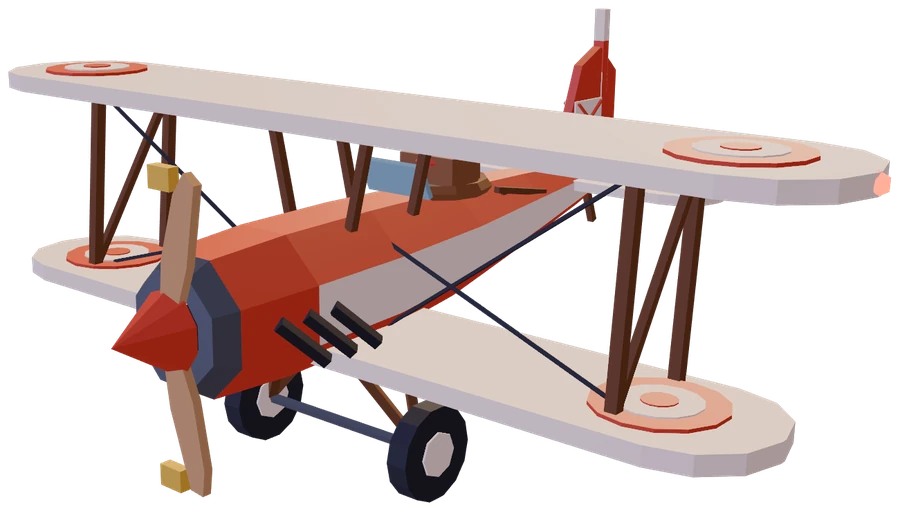

Every model is a Blender script
26 models and 99 thousand triangles, all built by Python run in Blender 5.1: the biplane, the ten islands, the hoop, the clouds, the balloon, the gulls, even the 3D logo at the top of this page. A shared palette means every color in the game is defined once.

# The pilot (blender/assets/plane.py)
body.ico(0.22, "skin",
loc=(0, -0.66, 1.08))
body.sphere(0.235, "leather",
loc=(0, -0.68, 1.12))
# ...and his scarf, streaming back
body.torus(0.2, 0.06, "cloth_red",
loc=(0, -0.66, 0.88))
body.beam((0.05, -0.8, 0.9),
(0.28, -1.75, 1.02),
0.12, "cloth_red")